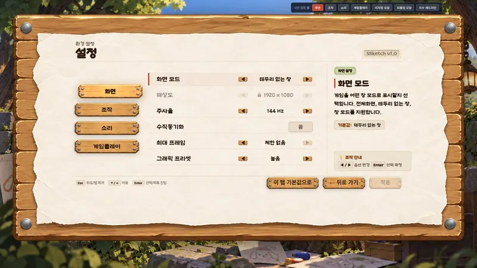
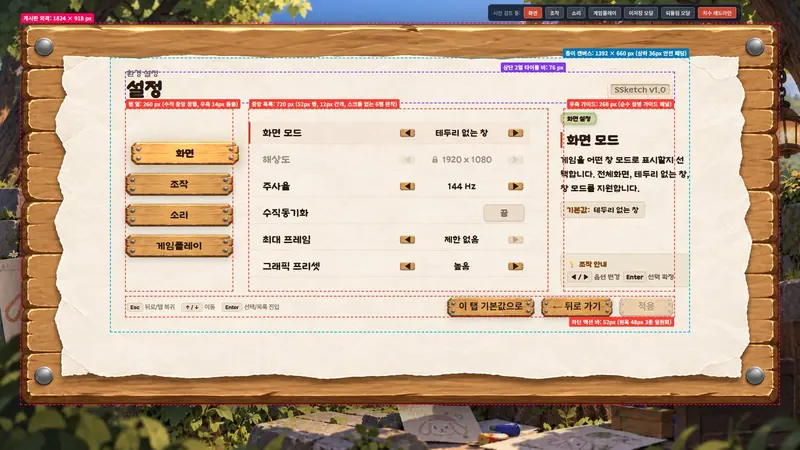
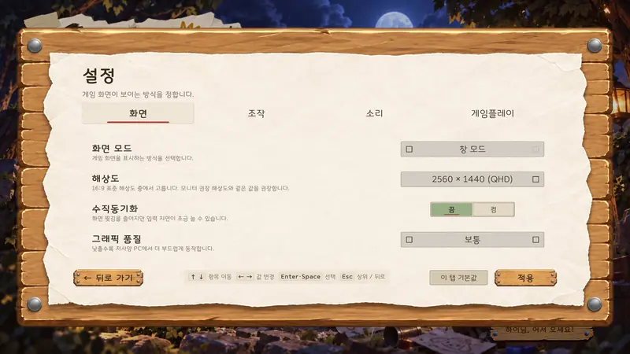

2026.01–현재
삼성 청년 SW·AI 아카데미 15기
Python·웹 개발 학습과 게임·서비스 팀 프로젝트 · 2026.12 수료 예정
김시후 · 기획 · 구현
2026년 팀 프로젝트 4개에서 게임과 웹 서비스를
기획하고 구현했습니다.
요구사항 명세 · 화면 기획 · 규칙·수치 설계
React · TypeScript · Vue · Unity
같은 화면을 보며 정하고, 실제로 동작하는지 확인했습니다.

탭·항목·모달 동작을 화면으로 합의

폭·여백을 수치로 정리해 구현 기준 확정

AI 도구로 구현하고 빌드에서 동작 확인
조금 더 소개한다면
문서와 화면으로 생각을 나누고, 팀의 방향을 맞춥니다.
70여 개 게임을 플레이했습니다. 카운터사이드 길드 「Time」을 약 6년 운영하며 참여 규칙·역할 분담·합병을 맡았습니다.
길드 운영 기록 ↗Figma·Unity는 기초 활용 경험입니다. AI 도구를 활용한 구현과 팀원 작업의 범위는 각 프로젝트에 표시했습니다.
컴퓨터활용능력 2급대한상공회의소
1종 보통 운전면허자동변속기 조건
데이터분석 준전문가(ADsP)한국데이터산업진흥원
FAT 1급한국공인회계사회
Python 기반 사무행정 CBDS 양성 과정 수료국립금오공과대학교 부설 평생교육원 · 2023.06.05–10.10 · 564시간. pandas·NumPy 데이터 분석, Matplotlib 시각화, 더존 SmartA 회계 실습
프로그래밍기능사한국산업인력공단 · 취득 당시 명칭: 정보처리기능사
거제옥포고등학교 졸업
산학협력 기술지원 패키지·구미시 청년근로자 코리빙 하우스 기본계획 연구 참여. 데이터 정리와 과제 코딩을 맡았습니다.
3D 푸드 프린터 익스트루더 특허 출원에 참여했습니다.출원번호 10-2019-0017015 · 출원 이력
AR 기반 보드게임 플랫폼 「보드모아」의 팀장과 가치 분석을 맡았습니다.당시 원본 자료는 보유하고 있지 않습니다.
기억에 남은 게임들을 처음 접한 시기와 함께 적었습니다.
시기는 유년·초등·중등·고등·대학으로 나눴습니다.